scenarioCSSFilters
Overview
This script sets up a 6-DOF spacecraft in deep space without any gravitational bodies. Only rotational motion is simulated. The script illustrates how to setup attitude filters that use measurements from the Coarse Sun Sensors (CSS).
The script is found in the folder basilisk/examples and executed by using:
python3 scenarioCSSFilters.py
When the simulation completes several plots are written summarizing the filter performances.
The simulation reads the Sun’s position from Module: spiceInterface. By creating this spice object and adding it to the task, the spice object automatically writes out the ephemeris messages.
The dynamics simulation is setup using a Module: spacecraft module where a specific spacecraft location is specified. Note that both the rotational and translational degrees of freedom of the spacecraft hub are turned on here to get a 6-DOF simulation. The position vector is required when computing the relative heading between the sun and the spacecraft locations. The spacecraft position is held fixed, while the orientation rotates constantly about the 3rd body axis.
The CSS modules must first be individual created and configured. This simulation
uses 8 sun sensors, in 2 pyramids of 4 units. The code that sets up a constellation
displays another method that is used in scenarioCSS. In this
case instead of creating a list of CSS and adding the list to the constellation,
the appendCSS command is used.
The constellation characteristics are summarized in the following table.
This table shows the individual unit vectors for each sensor, named nHat_B in the code.
CSS |
normal vector |
|---|---|
1 |
[\(\sqrt{2}\)/2, -0.5, 0.5] |
2 |
[\(\sqrt{2}\)/2, -0.5, -0.5] |
3 |
[\(\sqrt{2}\)/2, 0.5, -0.5] |
4 |
[\(\sqrt{2}\)/2, 0.5, 0.5] |
5 |
[-\(\sqrt{2}\)/2, 0, \(\sqrt{2}\)/2] |
6 |
[-\(\sqrt{2}\)/2, \(\sqrt{2}\)/2, 0] |
7 |
[-\(\sqrt{2}\)/2, 0, -\(\sqrt{2}\)/2] |
8 |
[-\(\sqrt{2}\)/2, -\(\sqrt{2}\)/2, 0] |
An additional message must be written for the configuration of the CSS for the
Flight Software modules. This is done with vehicleConfigData, a message that is
read once at the start of a simulation. This message also allows the user to set
different values between the simulation and the flight software parameters,
which could corrupt the simulation, and reproduce an imperfect spacecraft
construction process.
The filters can now be initialized. These are configured very similarly, but the nature of the filters lead to slight differences. All of the filters output a Navigation message which outputs the sun heading for other modules to use, but they also output a filtering message (SunlineFilterMsgPayload), containing observations, post-fit residuals, covariances, and full states. This allows users to check in on filter performances efficiently, and is used in this tutorial. This first allows us to see when observations occur throughout the scenario over which we are comparing performance:
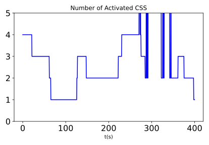Setup 1 - ukF
In the first run, we use an square root unscented Kalman Filter (Module: sunlineUKF). This filter has the following states:
States |
notation |
|---|---|
Sunheading |
|
Sunheading Rate| |
|
This filter estimates sunheading, and the sunheading’s rate of change. As a unscented filter, it also has the the following parameters:
Name |
Value |
|---|---|
|
0.02 |
|
2 |
|
0 |
The covariance is then set, as well as the measurement noise:
Parameter |
Value |
|---|---|
covariance on heading vector components |
0.2 |
covariance on heading rate components |
0.02 |
noise on heading measurements |
0.017 ** 2 |
noise on heading measurements |
0.0017 ** 2 |
The resulting plots of the states, their covariance envelopes, as compared to the true state are plotted. Further documentation can be found in Module: sunlineUKF.
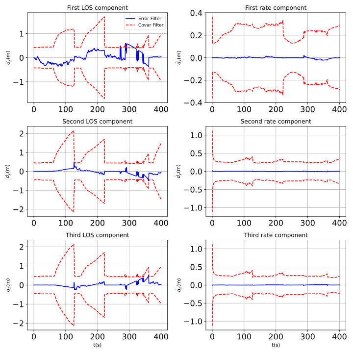 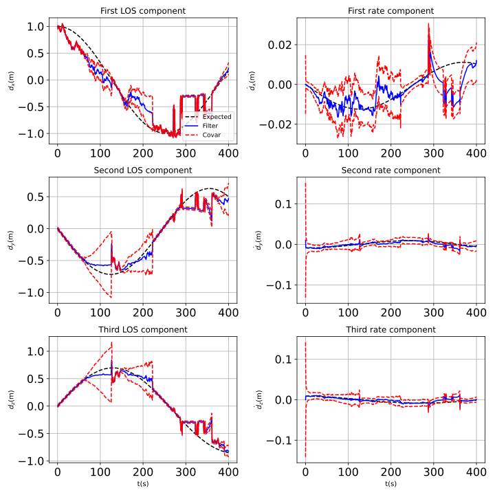These plots show good state estimation throughout the simulation. The mean stays close to the truth, the states do appear slightly noisy at times.
The post fit residuals, show a fully functional filter, with no issues of observability:
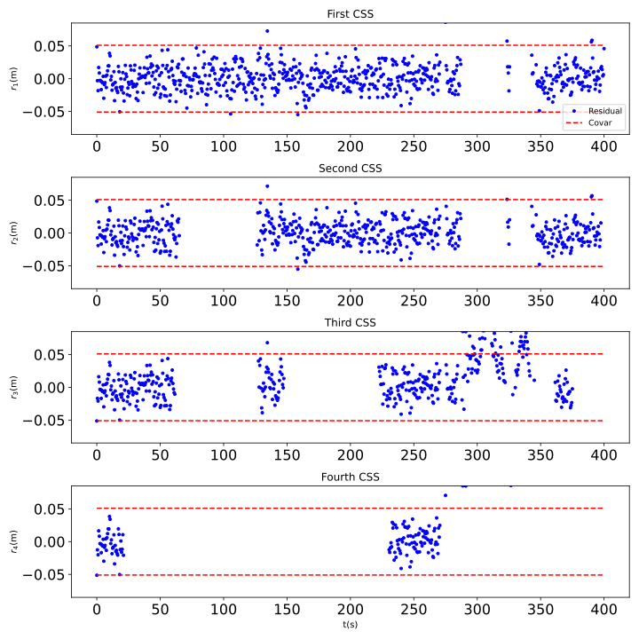Setup 2 - EKF
The following filter tested is an Extended Kalman filter (Module: sunlineEKF). This filter uses all the same values for initialization as the uKF (aside from the uKF specific alpha, beta, kappa variables). A couple variables are added:
Name |
Value |
|---|---|
Process noise |
0.001**2 |
CKF switch |
5 |
The process noise is the noise added on the dynamics. This allows to account for dynamical uncertainties, and avoid filter saturation.
The CKF switch is the number of measurements that are processed using a classical, linear Kalman filter when the filter is first run. This allows for the covariance to shrink before employing the EKF, increasing the robustness.
The states vs expected states are plotted, as well as the state error plots along with the covariance envelopes. Further documentation can be found in Module: sunlineEKF
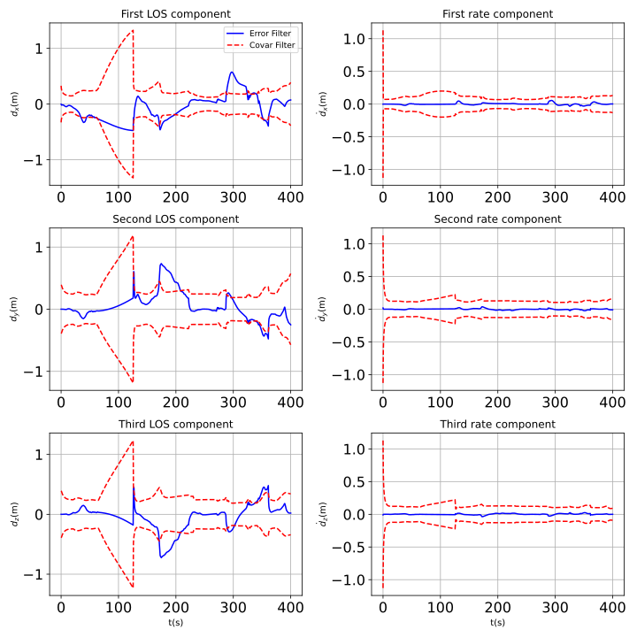
These plots show good state estimation throughout the simulation and despite the patches of time with fewer measurements. The covariance stays close to the mean, without exesive noise.
The post fit residuals, give further confirmation of a working filter:
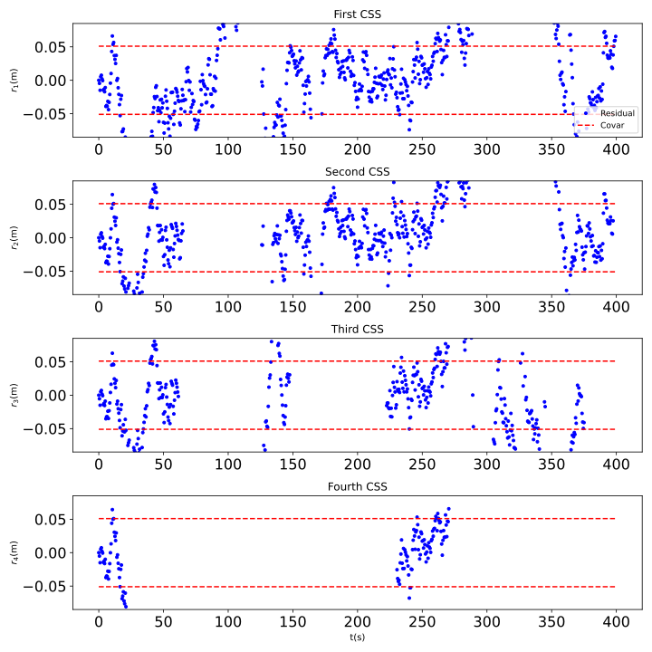Setup 3 - OEKF
The 3rd scenario uses a second type of Extended Kalman Filter (Module: okeefeEKF). This filter takes in fewer states as it only estimates the sun heading. In order to propagate it, it estimates the omega vector from the two last measurements.
The set up is nearly identical to the EKF, with the exception of the size of the vectors and matrices (only 3 states are estimated now). Furthermore, the rotation rate of the spacecraft, omega, is initialized. More in-depth documentation on the filter specifics are found in Module: okeefeEKF.
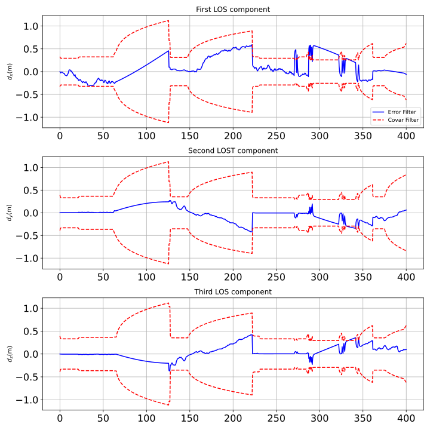 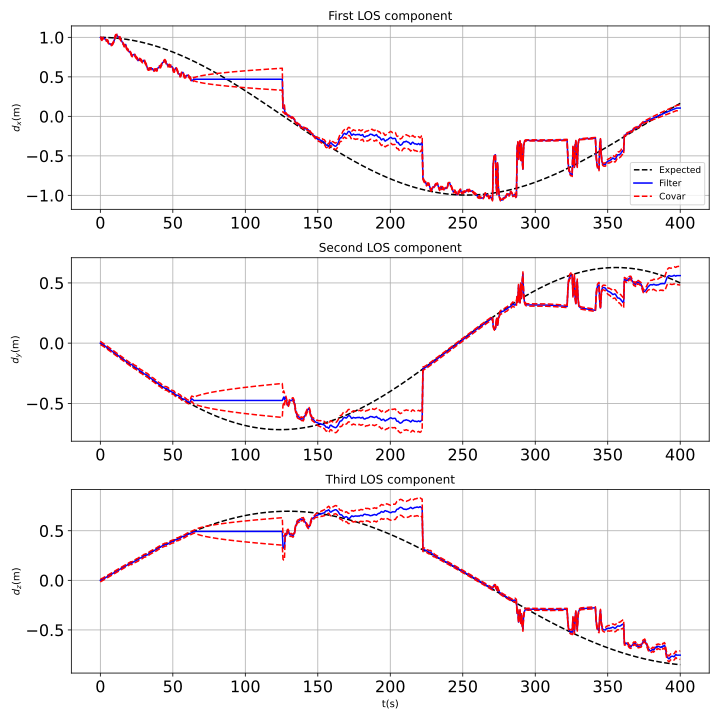These plots show poorer state estimation throughout the simulation. As measurements stop, the filter doesn’t propagate the states sufficiently well. This is due to the absence of rate in the states, and the compensation with the computation of omega can lead to noisy estimates.
The post fit residuals, do show that the filter is working, just with difficulties when measurements become sparse:
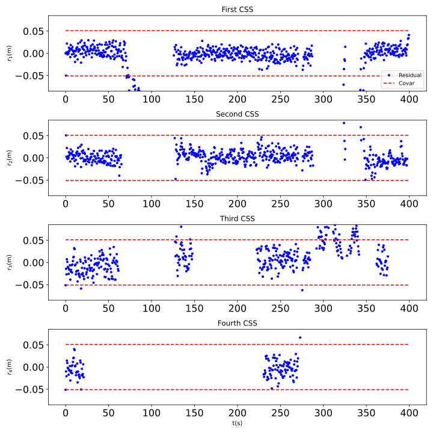Setup 4 -Switch-EKF
The 4th scenario uses a Switch formulation to extract the observable rates as well as estimate the sun heading (Module: sunlineSEKF).
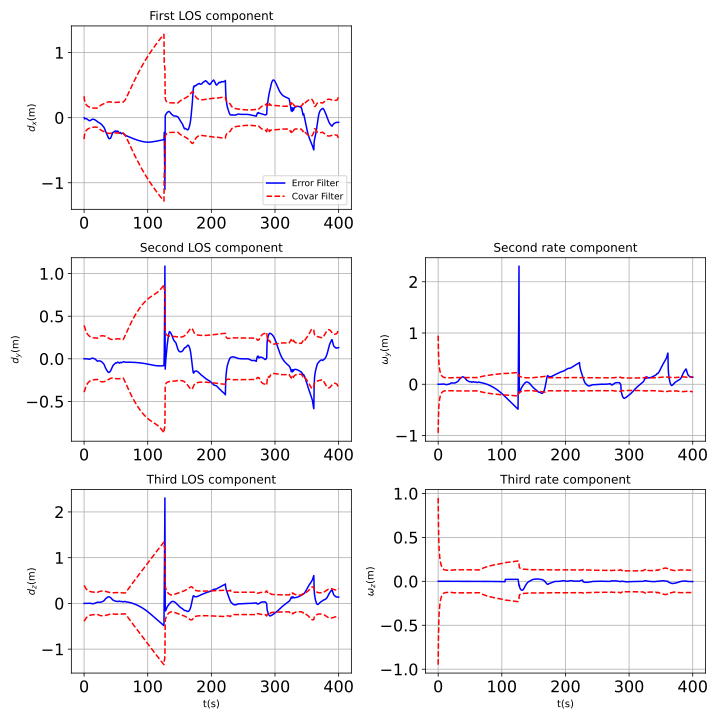 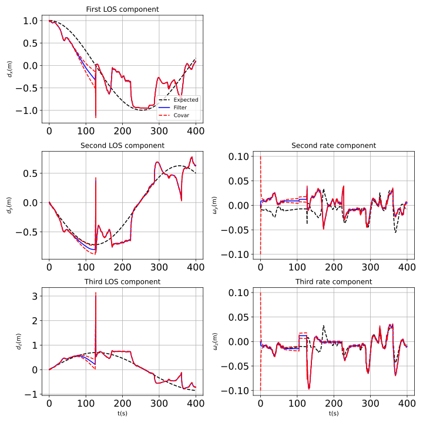These plots show poorer state estimation throughout the simulation.
The post fit residuals show that the filter is working, just with difficulties when measurements become sparse.
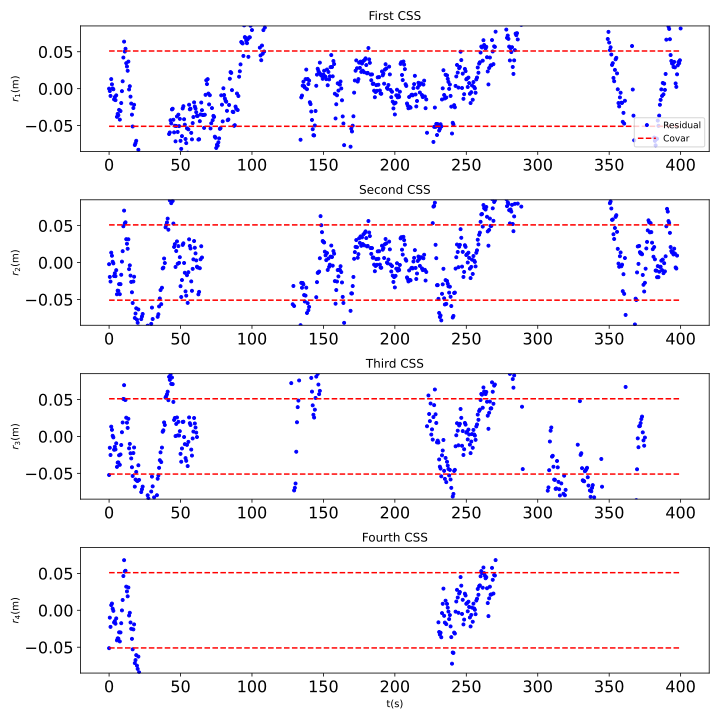Setup 5 -Switch-uKF
The 5th scenario uses the same Switch formulation but in a square-root uKF (Module: sunlineSuKF). This one has an additional state: the sun intensity (equal to 1 at 1AU). This state has low process noise and low initial covariance given it’s well determined nature generally.
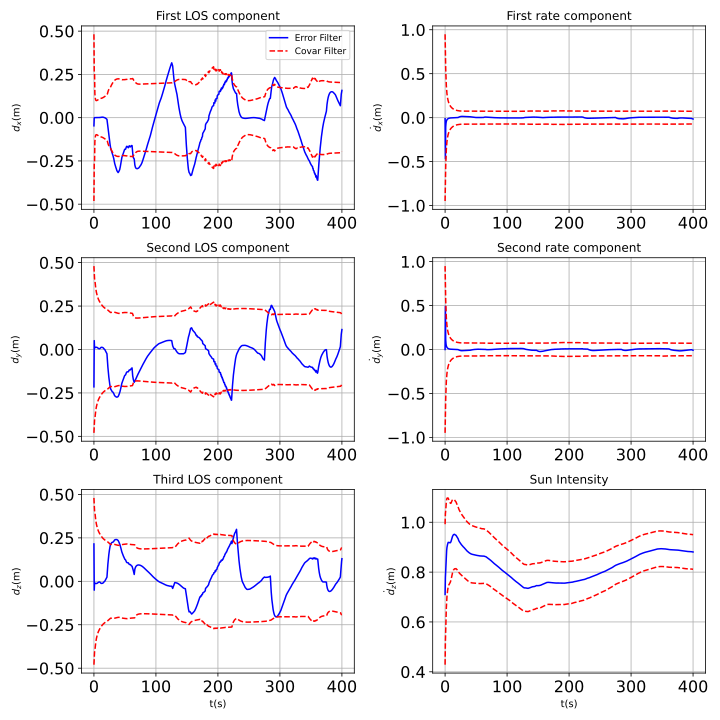 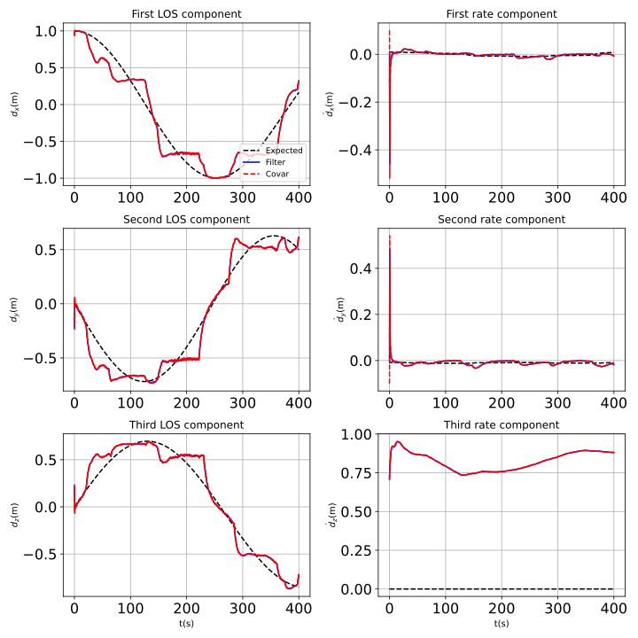These plots show good state estimation throughout the simulation. The mean stays close to the truth.
The post fit residuals, show a fully functional filter, with no issues of observabilty:
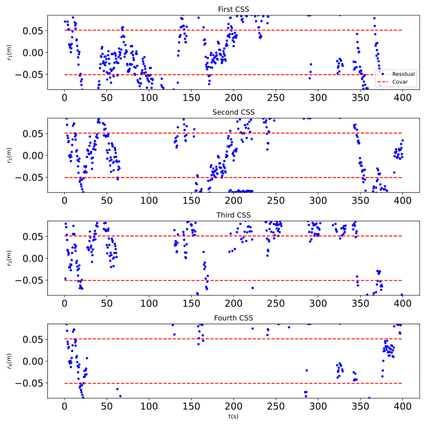- scenarioCSSFilters.run(saveFigures, show_plots, FilterType, simTime)[source]
At the end of the python script you can specify the following example parameters.
- Parameters:
saveFigures (bool) – flag to save off the figures
show_plots (bool) – Determines if the script should display plots
FilterType (str) – {‘uKF’, ‘EKF’, ‘OEKF’, ‘SEKF’, ‘SuKF’}
simTime (float) – The length of the simulation time